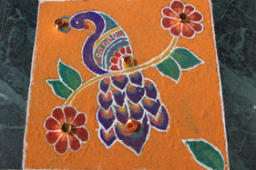
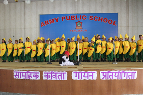
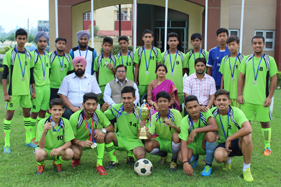
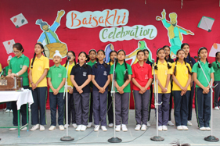
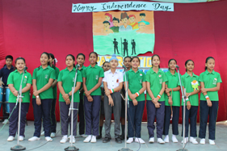
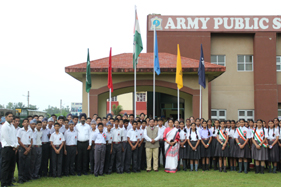

A rich legacy since 1955 — our history, our mission, and the people who lead.
The school comes into existence as the Garrison Nursery School, under the control and supervision of 167 Infantry Brigade.
The school is converted to Army School under the executive committee of the Army Welfare Education Society (AWES).
Formally inaugurated by Maj. Gen. Narahari, the then GOC 7 Inf Div. The school is affiliated to the Central Board of Secondary Education, New Delhi — affiliation no. 1680008.
A Senior Secondary school for Classes Balvatika to XII with a strength of 1,834 students, managed by HQ Inf Div under AWES, offering Science, Commerce and Humanities streams.

| Name of Institution | Army Public School |
| Affiliation Number | 1680008 (CBSE, New Delhi) |
| School Status | Senior Secondary Level |
| Classes | Balvatika to XII (Co-educational) |
| Medium of Instruction | English |
| Managing Body | HQ Inf Div / AWES |
| Principal | Mr Abhay Kumar Ojha, M.Sc. |
| Staff (CBSE record) | 26 Teaching · 7 Administrative |
| Address | Hospital Road, Ferozepur Cantt, Punjab — 152001 |
| Website | www.apsferozepur.com |
Army Public School, Ferozepur Cantt was formally inaugurated on 1st September 1984 by Maj Gen N S Narhari. We are a unique school with a rich legacy offering education with a difference. The school values each learner and provides opportunities for each student to learn and grow.
APS is a multi-cultural school which endeavours to promote all round development of the child through learning for life. We encourage personal expression and celebrate experimentation by every learner. Besides we focus on giving individual attention to each student and making learning accessible to all.
The curriculum is multi-dimensional including an academic programme of high quality and a wide range of co-curricular and extra-curricular activities. The school day is packed with activities that allow students to become effective communicators, problem solvers and creative thinkers.
With the right combination of universal and Indian values, we believe in helping every child to grow into a responsible citizen and a good human being.
Excellence Through Discipline.
Discipline in thought, word and deed — the foundation on which every APSite builds excellence.